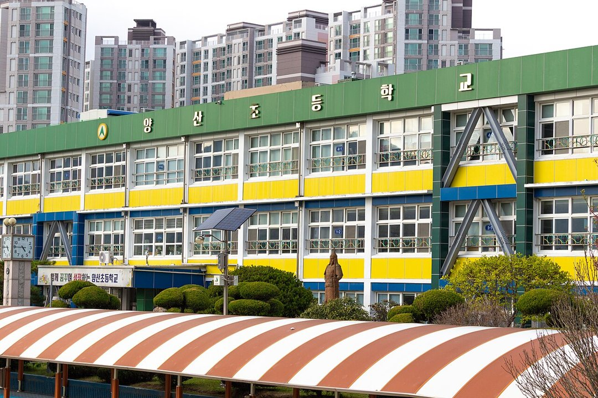
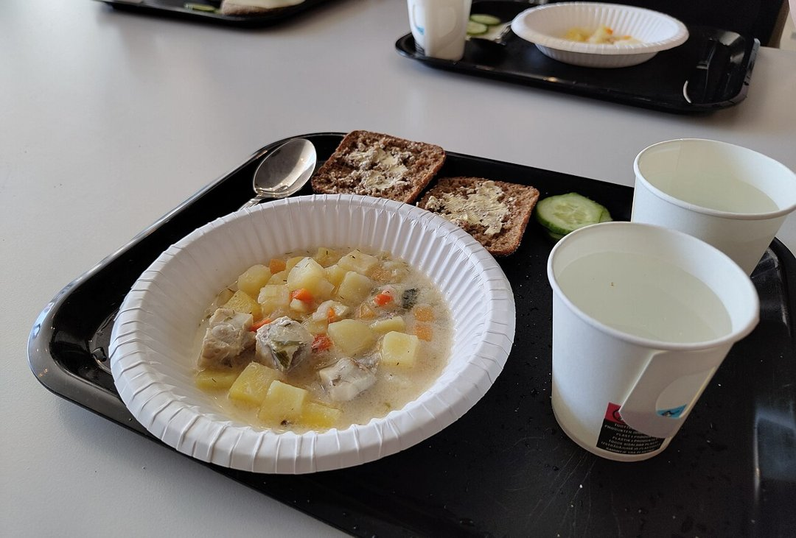

📷 사진 1 자리

▲ 양산초등학교(2025년 자료사진) · 사진: Nt / CC0 / 위키미디어 공용
도시락을 쌀지는 학교마다 달라요. 많은 학교가 빵·우유 같은 대체식을 주고, 일부 학교만 도시락을 가져오라고 안내해요. 초등 돌봄교실은 정상 운영이 원칙이에요. 학교에서 온 가정통신문이나 문자를 먼저 확인하세요.
11월 27일 학교 급식·돌봄 등을 맡는 비정규직 노동자들이 전국에서 동시에 파업에 들어갔어요. 노조는 약 4만 명이 참여한다고 추산했어요.
3줄 요약
우리 학교 급식은 어떻게 나올까
교육부와 시도교육청은 학교 여건에 맞춰 식단을 줄이거나 대체식을 주거나 도시락을 안내하도록 했어요. 경기도교육청이 지난해 학교에 보낸 지침을 보면 기준이 이래요.
| 급식실 파업 참여 | 학교 대응 |
|---|---|
| 50% 미만 | 남은 인력으로 식단 변경·간소화 |
| 50% 이상 | 빵·우유 같은 대체식 등 |
| 학교 사정상 어려움 | 도시락 지참 안내 |
서울은 급식하는 1,392개교 가운데 145개교(10.4%)가 오늘 정상 급식을 하지 못해요. 서울시교육청은 이 학교들이 모두 도시락 대신 대체식을 준다고 밝혔어요.
📷 사진 2 자리

▲ 학교 급식 한 끼(자료사진) · 사진: Jukajuha / CC0 / 위키미디어 공용
대전시교육청은 대체식을 줄 때 식품 알레르기를 고려하라고 안내했어요. 알레르기가 있는 아이라면 대체식 메뉴를 학교에 물어보는 게 안전해요.
돌봄교실과 유치원은
초등 돌봄교실은 파업 당일에도 정상 운영이 원칙이에요. 돌봄 전담사가 빠지면 학교 안 다른 인력이나 대체 프로그램으로 채워요. 서울시교육청은 유치원과 돌봄교실 모두 교사와 지방공무원을 투입해 정상 운영 중이라고 했어요.
특수학교와 특수학급은 학교별 상황에 따라 단축수업을 할 수 있어요. 돌봄을 맡기는 집이라면 하교 시간이 바뀌었는지도 함께 보세요.
왜 파업하나
전국학교비정규직연대회의는 9월부터 교육부, 16개 시도교육청과 임금 교섭을 했지만 합의하지 못했어요. 10월 찬반투표에서 92.5%가 파업에 찬성했어요.
| 구분 | 월 기본급 인상안 |
|---|---|
| 교육당국 첫 제시 | 4만 9,300원(2.3%) |
| 교육당국 수정안 | 6만 4,300원(3.0%) |
| 노조 요구 | 10만 5천 원(약 5%) |
노조는 당국 안이 내년 공무원 보수 인상률 3.9%에도 못 미친다고 주장해요. 근속수당 상한 폐지와 정기상여금 인상도 요구하고 있어요.
임금만의 문제는 아니에요. 연대회의는 학교급식법 개정으로 늘어나는 급식실 배치 인원에 맞춘 인력 충원 예산, 지방교육재정교부금 개편 중단, 교육복지 예산 확대도 함께 요구하고 있어요. 조리 인력이 모자라다는 문제는 파업이 없는 날의 급식과도 이어져 있어요.
지난해에는 전국을 4개 권역으로 나눠 나흘 동안 차례로 파업했어요. 2만 3,772명이 참여했고 급식하는 학교의 30.6%에서 급식이 중단됐어요. 올해는 전국이 같은 날 파업해 하루 영향이 더 클 수 있어요.
자주 묻는 질문
Q. 도시락은 꼭 싸야 하나요?
학교가 도시락 지참을 안내한 경우에만 챙기면 돼요. 대체식을 주는 학교가 더 많아요.
Q. 학교 안내를 못 받았어요.
학교 누리집 공지, 학교알리미·e알리미 같은 앱, 담임 선생님 알림장을 확인하세요. 아침에 학교 행정실에 물어봐도 돼요.
Q. 파업이 며칠 계속되나요?
오늘 이후 일정과 다음 교섭 날짜는 아직 확인되지 않았어요. 이어지면 학교가 다시 안내해요.
같은 동네라도 학교마다 조리원 몇 명이 파업했는지에 따라 정상 급식부터 도시락까지 갈려요. 그래서 뉴스보다 우리 학교 가정통신문 한 장이 더 정확해요. 아침에 안내를 못 봤다면 간단한 간식을 챙겨 보내는 정도가 현실적이에요.
교섭이 다시 결렬되면 파업이 반복될 수 있어요. 학교 알림을 켜 두고 다음 안내를 기다려 보세요.
함께 보면 좋은 이슈
끝까지 읽어 주셔서 감사해요.
공감(좋아요) ♥ 꾹, 이웃 추가도 부탁드려요!
#학교급식파업 #학교비정규직파업 #급식파업 #대체식 #도시락 #돌봄교실 #학비연대 #가정통신문 #학교급식 #초등돌봄